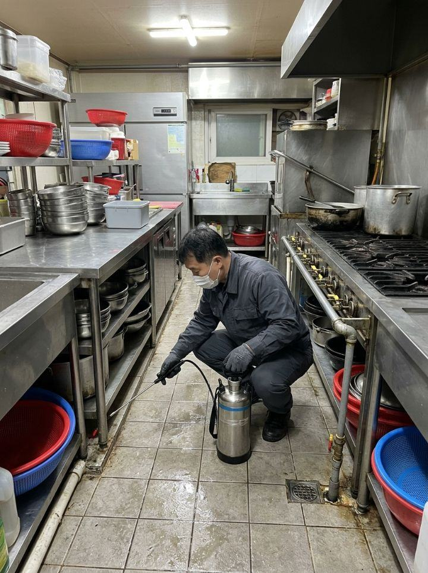

인천 전 지역
방역·해충
바퀴벌레·쥐·개미 퇴치
누르면 바로 연결돼요
- 동네 업체 3곳 중 골라서
- 출발 전에 예상 금액 안내

어느 동네세요?
바퀴벌레, 쥐, 개미, 진드기, 비둘기 문제로 일상이나 영업이 어려울 때 방역 업체를 연결합니다.
이런 일이면 부르세요
- 바퀴벌레
- 쥐
- 개미
- 진드기·빈대
- 날파리
- 식당 정기 방역
인천 방역·해충 비용
참고 범위예요. 업체가 출발하기 전에 전화로 예상 금액을 먼저 알려드립니다.
업체가 오기 전에
- 사진 남기기
벌레나 흔적 사진이 있으면 종류를 정확히 알고 약제를 고를 수 있습니다.
- 음식물 정리
방역 전날 음식물과 쓰레기를 치워 두면 효과가 오래갑니다.
- 아이·반려동물 확인
약제 종류와 환기 시간을 미리 안내받으세요.
시중 살충제를 여러 개 섞어 뿌리면 내성이 생기거나 사람이 다칠 수 있습니다.
자주 묻는 질문
방역 한 번이면 끝나나요?
바퀴벌레는 알까지 없애려면 2~3주 간격으로 2회 이상이 효과적인 경우가 많습니다.
약 냄새가 심한가요?
요즘은 겔(먹이)형 약제를 많이 써서 냄새가 적습니다. 분무형은 환기 시간이 필요합니다.
식당 소독 증명서도 되나요?
정기 방역 업체를 통해 발급받을 수 있습니다.